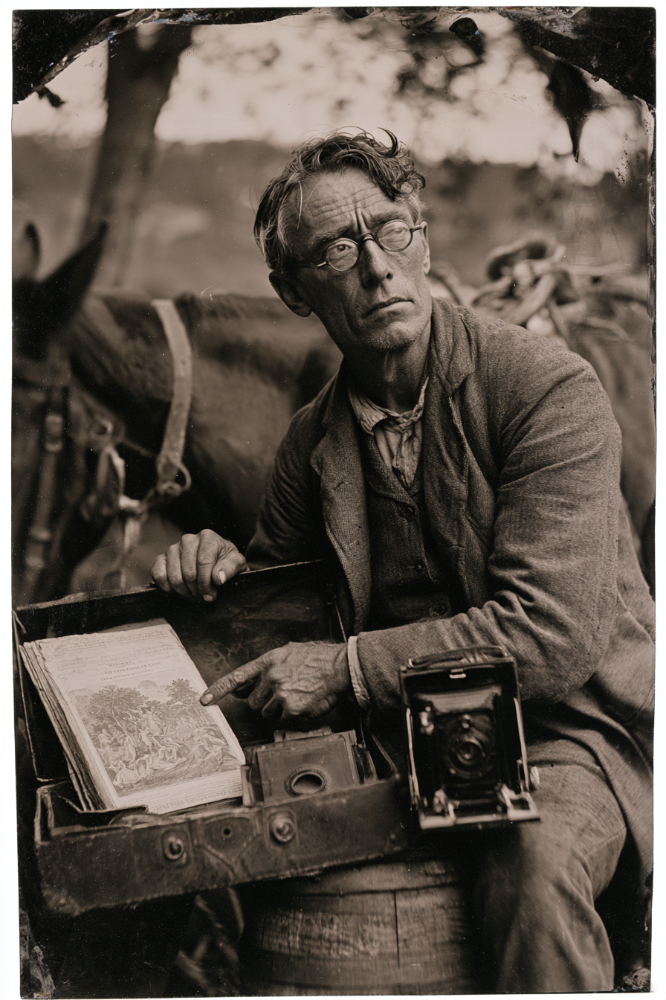

Archetyp: AGENT (Agenten)
Deckname: Mr. A. P. Hale, reisender Vortragsredner und Subskriptionswerber für Hale’s Compendium of Western Natural Philosophy**
Er hat über alles hier draußen gelesen und fast nichts davon überlebt.
| Agility | d6 | 1 |
| Smarts | d10 | 3 |
| Spirit | d4 | 0 |
| Strength | d4 | 0 |
| Vigor | d4 | 0 |
| Skill | Attr. | Die | Pts. |
|---|---|---|---|
| Fighting | Agi | d6 | 2 |
| Shooting | Agi | d6 | 2 |
| Occult | Sma | d8 | 3 |
| Research | Sma | d8 | 3 |
| Notice | Sma | d6 | 1 |
| Common Knowledge | Sma | d6 | 1 |
Hintergrund. Hale führte das Register des Bureau of Special Correspondence der Texas Rangers in Austin — die konföderierte Antwort auf die Agency — und er war sehr gut darin, auf die Art, wie ein Mann sehr gut sein kann, auf den noch nie geschossen wurde, wenn er die Berichte von Männern liest, auf die geschossen wurde. Als ’71 Washington brannte, starb seine Regierung unter seinem Schreibtisch weg, und er saß acht Monate in einem ungeheizten Aktenraum und bewachte Schränke, die niemand mehr abholen würde. 1872 kam die Fusion, das Twilight-Protokoll wurde über seinen Kopf hinweg angewendet, und ein Pinkerton-Mann betrat sein Archiv, las vier Seiten und bot ihm eine Bundeskarte an. Er nahm sie. Er ist seit zwölf Jahren Agent, und bis zu diesem Frühjahr hatte er nie einen Feldeinsatz, weil Denver seine Querverweise wollte, nicht seine Treffsicherheit — was großzügig ist, denn die Anmerkung des Schießausbilders in seiner Akte lautet: „bestanden, knapp, nicht links von ihm stehen.“
Tarnung, Führung, stehende Befehle. - Die Tarnung. Ein Buchvertreter. Er klopft in jeder Stadt an jede Tür und bittet, über die Wunder des Zeitalters sprechen zu dürfen, und eine Stunde später erinnert sich niemand an ihn — genau das ist der Zweck. Er verkauft echte Subskriptionen und verschickt echte Bände. Der Musterkoffer hat einen doppelten Boden für die Gatling-Pistole, und der „Musterband“, in dem er die Leute blättern lässt, ist ein Agency-Bestimmungsschlüssel für Abscheulichkeiten, gesetzt wie ein Enzyklopädie-Prospekt — Skizzen von Wesen, deren Schwächen als Bildunterschriften am Rand stehen. - Zwei Führungsoffiziere, und das ist das ganze Problem. - Mr. Silas Wrenn, Denver, sein Agency-Fallführer, der über Buchbestellungen kommuniziert: „drei Exemplare, Band IX“ heißt drei Tage bis zur Meldung, Band IX heißt der neunte stehende Befehl. - Colonel Cassius Ruel Boyd a. D., Austin, vormals Bureau of Special Correspondence, heute Verbindungsmann der Territorialen Ranger ohne jede feste Zuständigkeit, der Hale in der alten Bureau-Handschrift schreibt und mit „Ihr ergebener Diener, wie zuvor“ zeichnet. Hale beantwortet jeden Brief. Er hat Denver nie gesagt, dass Boyd schreibt. Die Briefe verlangen dieselben Dinge wie Denver, eine Woche früher — und Hale kann nicht herausfinden, ob das heißt, dass Boyd der Rückkanal von Deputy Director Oakes ist, oder ob ein Stück des konföderierten Geheimdienstes nie wirklich abgetreten ist. - Stehende Befehle. 1. Persönlich verifizieren. Jeder Eintrag, den Sie aus dem Bericht eines anderen katalogisiert haben, ist mit eigenen Augen zu bestätigen. Denver gleicht das Archiv gegen die Wirklichkeit ab, und wo das Archiv falsch ist, sind Männer daran gestorben. 2. Das Papier bergen. Tagebücher, Kirchenbücher, Hauptbücher, Landtitel und vor allem die Notizen des Toten. Dokumente kommen vor Überlebenden. 3. Keine Zeugenaussage im Feld korrigieren. Lassen Sie sie sagen, was sie gesehen haben. Wörtlich protokollieren. Die Korrektur ist eine Denver-Funktion, nicht Ihre. 4. Sie sind nicht befugt, sich freiwillig zu melden. Sie haben keine Befugnis zu führen, zu vereidigen oder Agency-Mittel zu binden. Übersteigt die Lage einen Mann mit einem Musterkoffer, ziehen Sie sich zurück und telegrafieren. 5. Boyds Befehl, unsigniert und inoffiziell: Jede Akte, die Kompanie H, das Bureau oder die Ereignisse vom März ’71 berührt, geht zuerst nach Austin und danach nach Denver — und wenn sie nur an einen gehen kann, wissen Sie, an welchen.
Befehle 2 und 4 werden an diesem Tisch jemanden umbringen: Hale wird eine brennende Treppe halb hinauf sein, um ein Hauptbuch zu holen, während die Posse schreit — oder er ist rechtlich verpflichtet, aus dem einen Kampf wegzugehen, auf den es ankommt. Befehl 5 heißt, dass er technisch und wissentlich Material am eigenen Dienst vorbeischleust.
Build. Geschicklichkeit W6, Verstand W10, Geist W4, Stärke W4, Konstitution W4 · Parade 5, Robustheit 4 Kämpfen W6, Schießen W6, Okkultismus W8, Nachforschen W8, Bemerken W6, Allgemeinwissen W6 — Reiten ist ungelernt, und man sieht es. Talente: Agent, Investigator (Ermittler), Scholar (Gelehrter: Okkultismus) → Netto Okkultismus W8+2, Nachforschen W8+2. Er identifiziert das Monster und seine Schwäche besser als jeder Lebende, aus sicherer Entfernung, in etwa vier Minuten — sofern gerade niemand in ihn beißt. Handicaps: Curious (Neugierig) — Major: er öffnet die Kiste. Er liest die Tafel laut vor. Er weiß, dass das ein Fehler ist, und hat eine Abhandlung darüber verfasst. · Lying Eyes (Verlogene Augen) — Minor: der beste Analytiker des Dienstes ist ein miserabler Lügner — genau deshalb saß er zwölf Jahre hinter einem Schreibtisch · Loyal — Minor: der Motor der ganzen Figur. Seine Befehle sagen zurückziehen und melden; sein Gewissen sagt, diese Leute haben ihn aus einer Mine getragen. Geist W4 und kein Mumm (braucht Geist W6+) heißt: er würfelt in einem Spiel voller Angstproben einen W4 auf Angstproben. Das ist Absicht. Er weiß genau, was im Raum ist, auf Latein, und wird die Probe trotzdem vergeigen. Ausrüstung: Gatling-Pistole im doppelten Boden des Musterkoffers (einmal abgefeuert, auf eine Wand) · Agency-Ausweis, im Schuh, nie gezeigt · der „Musterband“ · Arztkoffer (er obduziert Dinge, die nie gelebt haben) · Werkzeugsatz · Kastenkamera mit acht Platten · Brille · eine Unze Geisterstein in einer versiegelten Dose als Vergleichsprobe · acht Unzen Silbererz zum Gießen · Colt Peacemaker · ein Maultier, kein Pferd, weil alle einig waren, dass das sicherer ist. Schlimmster Albtraum: dass das Archiv des Bureau nie eine Aufzeichnung dessen war, was geschah. Dass es ein Plan war, und er hat ihn indiziert.
Aufhänger. Querverweis 1147-B ist ein Fall, den Hale 1869 in Austin katalogisiert hat und zu dem er den Quellbericht nie finden konnte: ein Eintrag in seiner eigenen Handschrift, der ein Ereignis in Presidio County beschreibt, das nie ein Ranger gemeldet hat. Er erinnert sich nicht daran, ihn geschrieben zu haben. Colonel Boyds Briefe kreisen ständig darum, ohne ihn je zu benennen, und jeder Ort, an den die Posse seit April geritten ist, lag im Umkreis von sechzig Meilen um eine der dort aufgeführten Stellen. Hale ist inzwischen fast bei einer Schlussfolgerung, die er nicht aufschreiben kann: dass Boyd ihn nicht bittet, die Akte zu bergen. Boyd prüft, ob Hale sie schon gelesen hat.
Warum es Spaß macht. Du bist der Mann mit der Antwort und ohne Nerven — der Tisch hängt an deinem Okkultismus-Wurf und sieht dann zu, wie du eine Angstprobe vergeigst und dich hinter dem Maultier versteckst. Und jede Sitzung wählst du still zwischen dem Dienst, der dir das Leben rettete, dem Colonel, der dich nie entlassen hat, und den vier Leuten, die dich immer wieder aus brennenden Gebäuden ziehen.
Regelgrundlage: Regelnotizen · Archetyp-Notizen